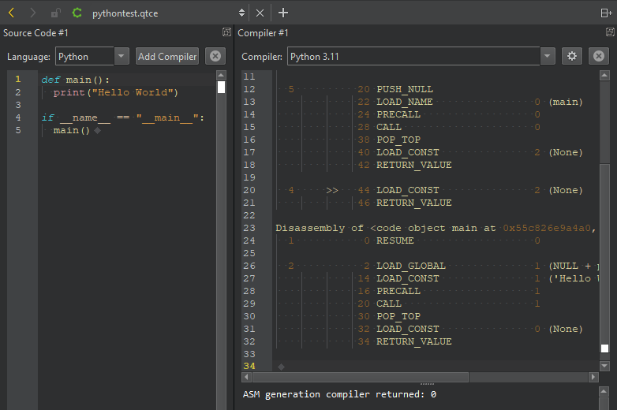
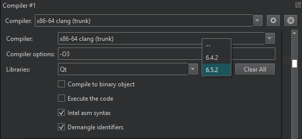

Explore compiler code
With the Compiler Explorer, you can enter code to explore the capabilities of your compilers and interpreters. Qt Creator supports all languages, compilers, and libraries that Compiler Explorer supports. You can save your compiler explorer session as a JSON-based .qtce file.

Note: Enable the Compiler Explorer plugin to use it.
To check how a compiler sees C++ or Python code:
- Go to Tools > Compiler Explorer > Open Compiler Explorer.
- In the Language field, select the language to compile.
- In the Compiler field, select a compiler to see the assembly code.
- Enter code to see the resulting assembly code.
Hover the mouse over the assembly code, to have the matching source lines highlighted.
You can also see the application status and output.
To explore several compilers, select Add Compiler.
Set compiler options
Select  to set options for the selected compiler.
to set options for the selected compiler.

| Setting | Value |
|---|---|
| Compiler options | Arguments passed to the compiler. Add options to enable optimization and to change other aspects of the compilation. For example, the value -O3 enables the optimizer with aggressive optimization. |
| Libraries | Select Edit to add the libraries that your code links against. Start typing in the field to find a particular library. The selection is saved only after you select the version of the library next to the library name. |
| Execute the code | Execute the resulting executable. |
| Compile to binary object | Convert the source code to a binary executable. |
| Intel asm syntax | Use the Intel ASM syntax for writing the assembly code. |
| Demangle identifiers | Extract and demangle identifiers from mangled symbols. Name mangling adds descriptive data to a function's identifier at link time. The data indicates which namespace and object a function belongs to and which arguments it handles in which order. |
See also Create compiler explorer sessions, Enable and disable plugins, Add compilers, and Add custom compilers.